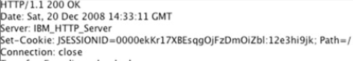
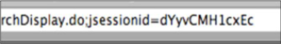
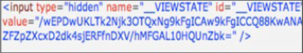

Session Tokens stealing
Maintaining the concept of a "session" across many different TCP connections is commonly accomplished using any combination of
Cookies,
URL parameters,
hidden form fields passed via HTTP POST, and IP/browser information.
• Cookie-Based Session
• URL-Based Session
• Hidden Form Field-Based Session
